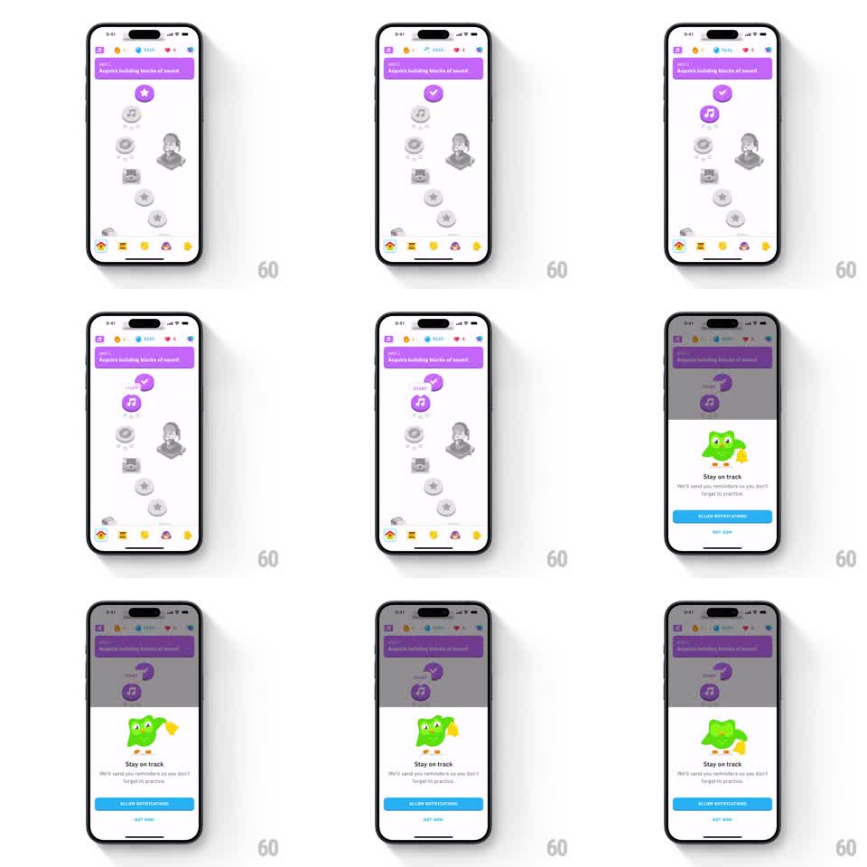

Media
Frame-by-frame

Rebuild this interaction 1:1: Duolingo's notification-permission ask - after the learner completes a unit checkpoint, a bottom sheet slides up over a dimmed learning path with Duo ringing a bell, asking to "Stay on track" with Allow Notifications and Not Now actions.

Rebuild this interaction 1:1: Duolingo's notification-permission ask - after the learner completes a unit checkpoint, a bottom sheet slides up over a dimmed learning path with Duo ringing a bell, asking to "Stay on track" with Allow Notifications and Not Now actions. ## Integration Integration: stack-agnostic spec - springs given as stiffness/damping, timed motions as duration + curve; map every value to your framework and animation library of choice. ## Scene Learning path screen (Music course: purple unit header, winding path of node icons, bottom tab bar). The completed unit's node flips from a star to a purple checkmark. Then: 40% black scrim, and a white bottom sheet - Duo holding a yellow bell, bold "Stay on track" title, body copy "We'll send you reminders so you don't forget to practise", full-width blue ALLOW NOTIFICATIONS button, gray NOT NOW text button below. ## Motion spec Pattern: celebratory checkpoint flip into a permission bottom sheet. - Checkpoint flip: the node icon swaps star to checkmark with a pop (scale 0.6 to 1.15 to 1.0, spring stiffness ~340, damping ~20, ~350ms). - Scrim fades in over 200ms; the sheet follows immediately: translateY 100% to 0, spring stiffness ~300, damping ~28, one soft settle. - Duo and his bell animate inside the sheet: the bell swings side to side (rotation +-12deg, ~700ms loop, ease-in-out) while Duo holds it up. - Buttons fade in with the sheet fully settled (opacity 0 to 1, 150ms) - actions never appear mid-travel. - Dismiss (Not Now or allow) reverses the motion: sheet slides down 300ms ease-in, scrim fades. ## Calibration - The sheet is a spring, not a linear slide - one small overshoot on arrival reads as playful, two reads as buggy. - The checkpoint pop and the sheet entrance are separate beats; do not run them together. ## Reduced motion Scrim and sheet crossfade in place over 200ms; bell is static. ## Don't miss - The path screen stays visible under the scrim - context is preserved, this is not a new page. - NOT NOW is a plain text action under the primary button; keep the hierarchy.